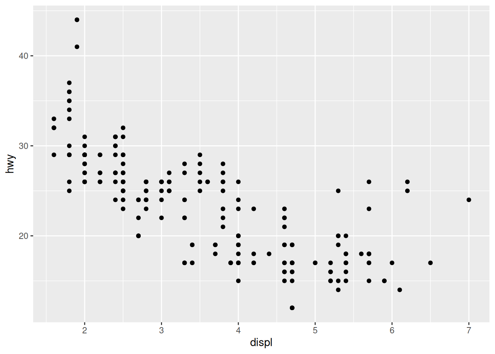
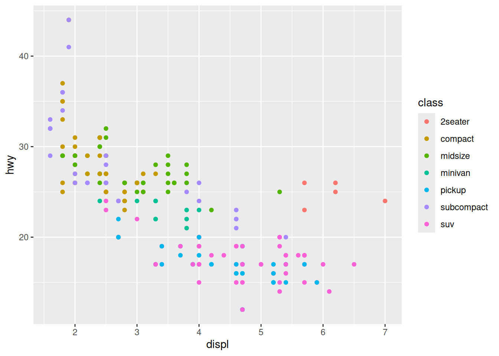
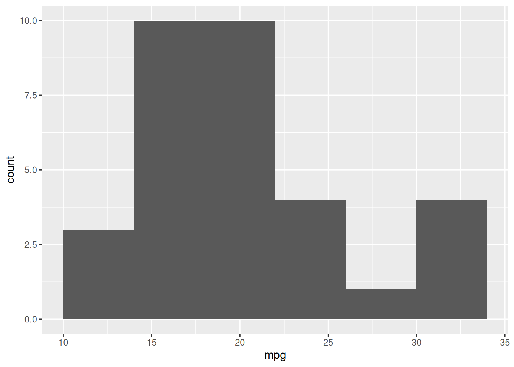
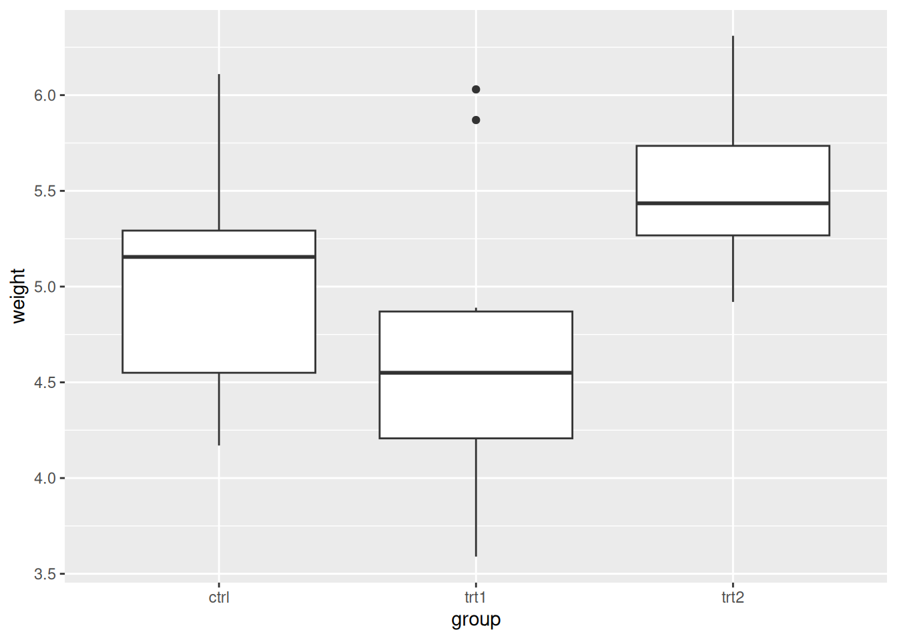
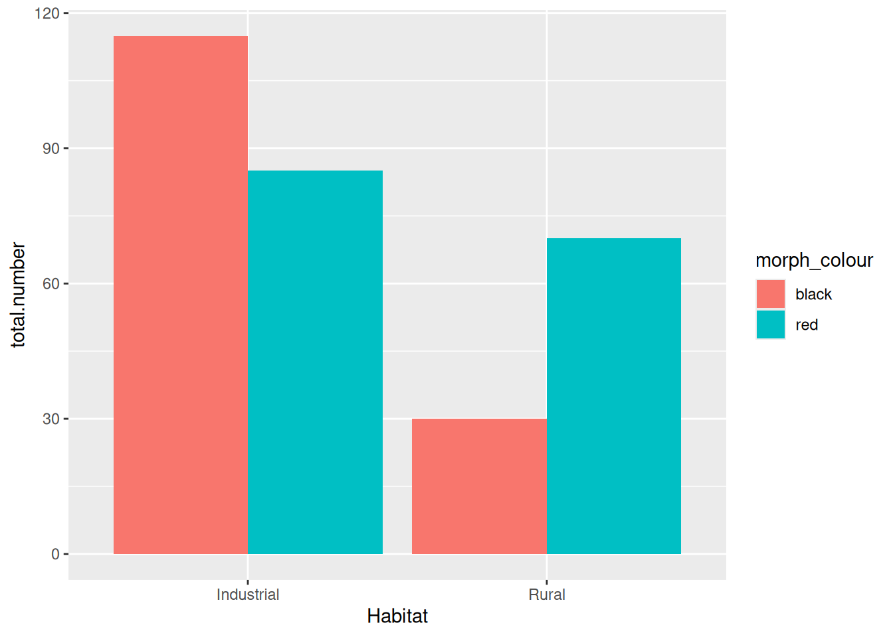
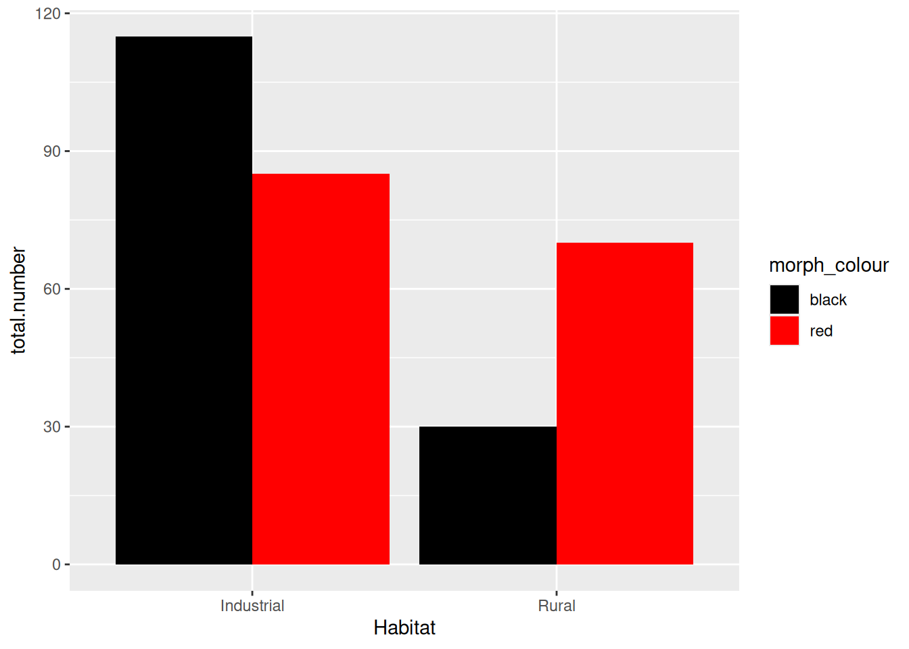

install.packages("tidyverse")Getting Started with R
1 Getting Acquainted with R
1.1 What is ‘R’
- R is a free software environment for statistical computing and graphics.
- Guide book
1.2 There are two methods to use R
- Using Google Colaboratory on cloud
- Using the applications on your PC
1.3 Using Google Colaboratory
- Access Google.
- Login with your ELMS account.
- Go to Google Drive.
- You can visit Google Drive through the ELMS menu.
- Make a new folder and open it.
- Make a new file of Google Colaboratory.
- Change the runtime type into ‘R’.
1.4 Using R on a PC
- For installation
1.5 Getting RStudio
- RStudio is an Integrated Developmental Environment (IDE), an application that makes interacting with R easier and more pleasurable.
- For installation
1.6 Cheatsheets
- Help > Cheatsheets > RStudio IDE Cheat Sheets
- rstudio-ide.pdf
2 Data management
2.1 Install tidyverse package
- Start RStudio
- tidyverse package includes these sub packages
- ggplot2
- dplyr
- tidyr
- readr
2.2 Tidy data
- R for Data Science
- 3 rules
- Each variable must have its own column
- Each observation must have its own row
- Each value must have its own cell
2.2.1 Not Tidy Data
| country | year | type | count |
|---|---|---|---|
| Afghnistan | 1999 | cases | 745 |
| Afghnistan | 1999 | population | 19987071 |
| Afghnistan | 2000 | cases | 2666 |
| Afghnistan | 2000 | population | 20595360 |
| Brazil | 1999 | cases | 37737 |
| Brazil | 1999 | population | 172006362 |
2.2.2 Tidy Data
| country | year | cases | population |
|---|---|---|---|
| Afghnistan | 1999 | 745 | 19987071 |
| Afghnistan | 2000 | 2666 | 20595360 |
| Brazil | 1999 | 37737 | 172006362 |
| Brazil | 2000 | 80488 | 174504898 |
2.3 Install sample data package
install.packages("nycflights13")2.4 New Project
- File > New Project
- New Directory
- New Project
- Directory name: MyProject
- Create project as subdirectory of: “~/Documents”
library(nycflights13)
library(tidyverse)
View(flights)
?flights2.5 filter()
- filter() allows you to subset observations based on their values.
- For example, we can select all flights on January 1st with:
2.6 select()
- select() allows you to rapidly zoom in on a subset by specifying the names of the variables.
select(flights, year, month, day)2.7 mutate()
- mutate() adds new columns that are functions of existing columns.
2.8 group_by() and summarize()
- group_by() categorizes data into groups by some variables.
- summarize() applies some calculation to each of the groups.
- For example, if we want the average delay per date:
- If there is any missing value in the input, the output will be a missing value.
- We need to remove the missing values prior to computation by assigning the “TRUE” value to the na.rm argument.
2.9 Pipe
- If we want to explore the relationship between the distance and average delay for each location,
- we might write code like this:
- In this code we have to give each intermediate data frame a name (by_dest and delay)
- You can omit these intermediates by using the pipe, “%>%”:
2.9.1 Scripts
- You can store sequences of commands as a script file.
- File > New File > R Script
- You can edit your script on the script editor.
- You can copy commands you executed from the History panel.
- The short cut key, Cmd/Ctrl + Enter, executes the current R expression in the console.
Quarto enables you to weave together content and executable code into a finished document. To learn more about Quarto see https://quarto.org.
3 Visualizing data
- You want to get some meaning or relationship from your data.
- Before statistical analysis you should plot your data and see its patterns.
- If you do this, you can image and get information about the way of analysis.
- The ggplot2 package provides the means to visualize data effectively.
3.1 ggplot2
── Attaching core tidyverse packages ──────────────────────── tidyverse 2.0.0 ──
✔ dplyr 1.1.4 ✔ readr 2.1.5
✔ forcats 1.0.0 ✔ stringr 1.5.1
✔ ggplot2 3.5.2 ✔ tibble 3.2.1
✔ lubridate 1.9.4 ✔ tidyr 1.3.1
✔ purrr 1.0.4
── Conflicts ────────────────────────────────────────── tidyverse_conflicts() ──
✖ dplyr::filter() masks stats::filter()
✖ dplyr::lag() masks stats::lag()
ℹ Use the conflicted package (<http://conflicted.r-lib.org/>) to force all conflicts to become errors3.2 Scatter plot
View(mpg)
ggplot(mpg) +
geom_point(aes(x = displ, y = hwy))
- ggplot(data): creates a coordinate system for a data frame to be plotted
- geom_point(): adds a layer of points to your plot.
- aes(): arguments specify which variables to map to the x and y axes.
3.2.1 Aesthetic mappings
- you can map the colors of your points by according to the class variable.
- ggplot2 will add a legend for colors.
ggplot(mpg) +
geom_point(aes(x = displ, y = hwy, color = class))
3.2.2 Fitting a regression model into data
- lm() method calculates a regression line.
- If you omit the method argument, ggplot2 calculates a fitting curve by the local polynomial regression fitting (loess) method.
- If you specify se = FALSE, a confidential region isn’t displayed.
ggplot(mpg) +
geom_point(aes(x = displ, y = hwy, color = class)) +
geom_smooth(aes(x = displ, y = hwy), method = lm, se = FALSE)`geom_smooth()` using formula = 'y ~ x'
3.3 Line plot
3.4 Bar graph
- geom_bar() plots bar charts that show counts
- If a column has count data, set “identity” to the stat parameter.
3.5 Histogram
View(mtcars)
ggplot(mtcars) +
geom_histogram(aes(x = mpg), binwidth = 4)
3.6 Box plot
- geom_boxplot() displays five summary statistics (minimum, maximum, median, first quartile, and third quartile), and all “outlying” points individually.
View(PlantGrowth)
ggplot(PlantGrowth) +
geom_boxplot(aes(x = group, y = weight))
4 Introducing Statistics in R
4.1 \(\chi^{2}\) contingency table analysis
lady <- read_csv("datasets-master/ladybirds_morph_colour.csv")Rows: 20 Columns: 4
── Column specification ────────────────────────────────────────────────────────
Delimiter: ","
chr (3): Habitat, Site, morph_colour
dbl (1): number
ℹ Use `spec()` to retrieve the full column specification for this data.
ℹ Specify the column types or set `show_col_types = FALSE` to quiet this message.View(lady)4.1.1 Ladybirds
`summarise()` has grouped output by 'Habitat'. You can override using the
`.groups` argument.ggplot(totals, aes(x = Habitat, y = total.number, fill = morph_colour)) +
geom_bar(stat = 'identity', position = 'dodge')
`summarise()` has grouped output by 'Habitat'. You can override using the
`.groups` argument.ggplot(totals, aes(x = Habitat, y = total.number, fill = morph_colour)) +
geom_bar(stat = 'identity', position = 'dodge') +
scale_fill_manual(values = c(black="black", red="red"))
4.1.2 Contingency table
lady.mat <- xtabs(number ~ Habitat + morph_colour, data = lady)
chisq.test(lady.mat)
Pearson's Chi-squared test with Yates' continuity correction
data: lady.mat
X-squared = 19.103, df = 1, p-value = 1.239e-05